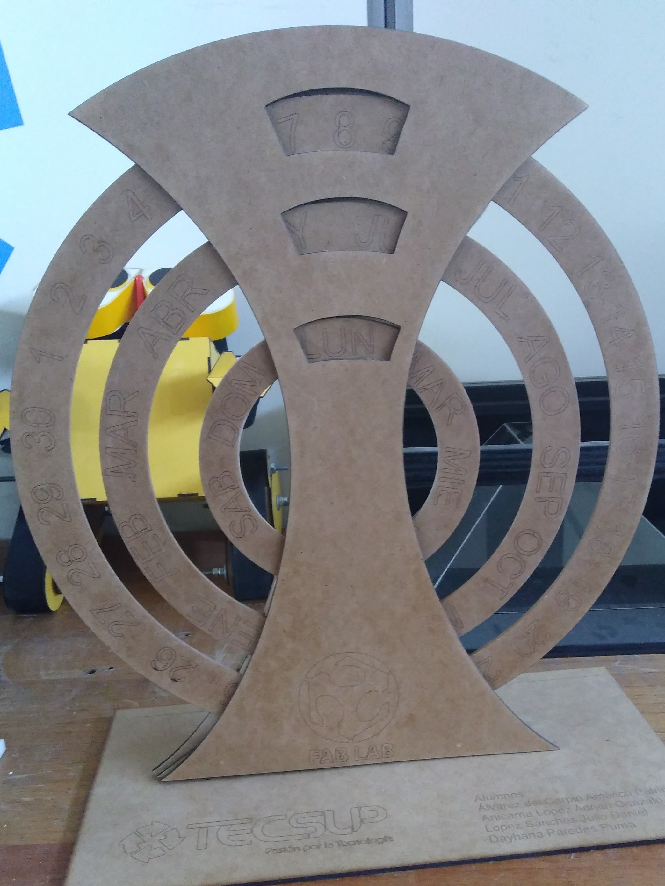

Language: English
La cortadora Laser es una máquina que realiza grabado, corte y marcado en mdf y vinílico.
Corte a láser
En este documento usted podrá visualizar las configuraciones realizadas tanto en el archivo compatible con la máquina que es CorelDraw así como de la máquina.
Documento Cortadora Láser
En el presente documento se muestra a detalle las configuraciones para la impresión en cortadora láser,comenzando con la especificación de medidas del proyecto , detalles de la impresión y la configuración de la máquina para realizar la impresión.
Documento - Fabricación DigitalArchivos Cortadora Láser
Este archivo (.cdr) contiene el trabajo en formato de Corel Draw©
Archivo - Fabricación DigitalArchivos Cortadora Láser
Este archivo (.cdr) contiene el trabajo en formato de Corel Draw©, además de mostrar las medidas de cada parte del proyecto.
Archivo - Fabricación DigitalProyecto Finalizado
